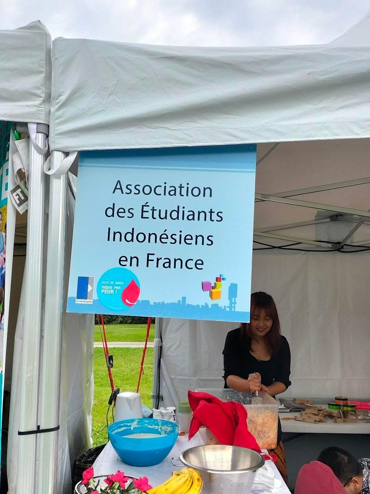
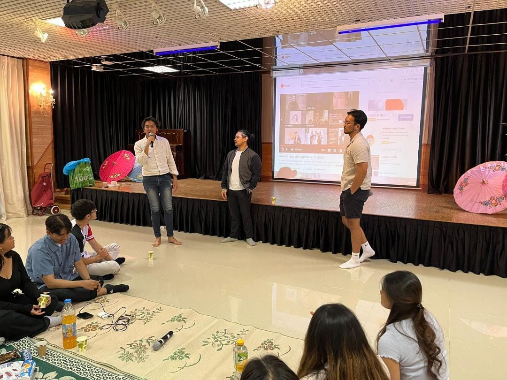
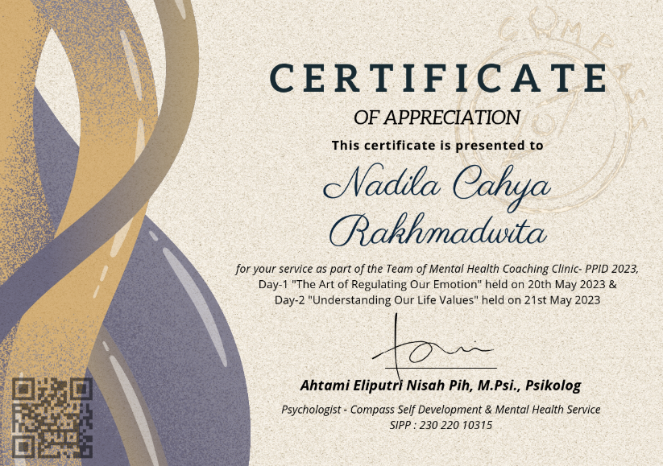
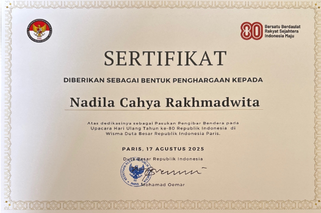
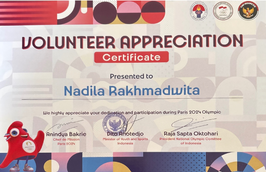
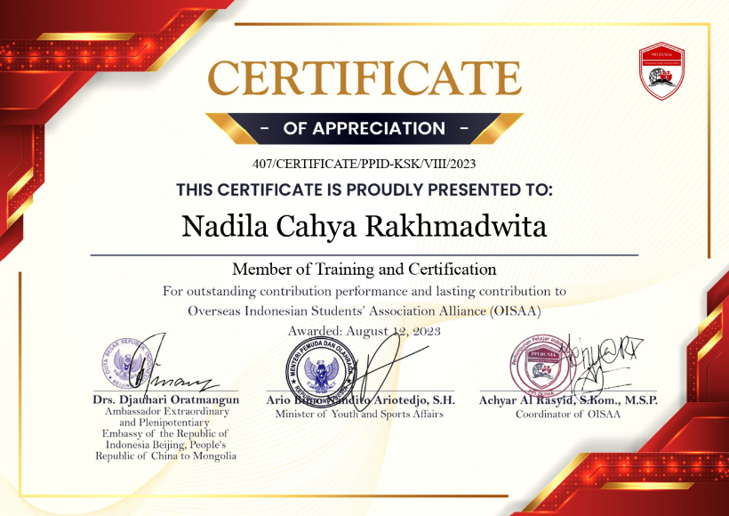

Stages
Résidence DOMITYS Les Robes d’Airain
Stage d’observation – 1 mois
Ce premier stage m’a permis de découvrir le fonctionnement général d’une résidence services seniors et d’observer
l’organisation d’une structure accueillant des personnes âgées. À travers les échanges avec les professionnels et les
résidents, j’ai pu mieux comprendre les différents rôles exercés au sein de la structure ainsi que les enjeux liés à
l’accompagnement des personnes âgées.
Durant ce stage, j’ai participé à plusieurs missions administratives et organisationnelles telles que la gestion des
plannings hebdomadaires du personnel, le suivi des projets personnalisés des résidents et la gestion de certains
dossiers administratifs. J’ai également participé à l’animation d’un événement organisé à l’occasion de l’anniversaire
de la Libération de Caen, ce qui m’a permis de contribuer à la vie sociale de la résidence.
Ce stage m’a permis de développer mes capacités d’observation, de communication et d’adaptation au fonctionnement d’une
structure médico-sociale. Il m’a également permis de mieux comprendre l’importance du travail d’équipe et de la
coordination entre les professionnels afin d’assurer un accompagnement de qualité aux résidents.
2ème année – CCAS d’Alençon
Stage de mission
Ce stage au sein du CCAS d’Alençon m’a permis de découvrir le fonctionnement d’une collectivité territoriale et de
participer à des projets liés à la précarité alimentaire étudiante. Cette expérience m’a sensibilisée aux problématiques
sociales rencontrées par les étudiants ainsi qu’aux actions mises en place pour favoriser l’accès à l’alimentation et
réduire les situations de précarité.
Au cours de ce stage, j’ai participé au suivi et au développement de différents projets en lien avec l’alimentation
étudiante. J’ai notamment contribué à l’appel à projet « Mieux manger pour tous », participé à la mise en place
d’ateliers cuisine et réalisé un questionnaire concernant la création d’une épicerie étudiante sur le campus. J’ai
également pris part à plusieurs réunions et groupes de travail avec différents partenaires institutionnels et
associatifs.
Cette expérience m’a permis de développer mes compétences en gestion de projet, en travail partenarial et en
communication professionnelle. Elle m’a également appris à travailler avec différents acteurs du territoire et à
comprendre l’importance de la coopération entre les structures pour répondre aux besoins des publics.
3ème année – EHPAD La Miséricorde
Stage de mission
Mon stage en EHPAD m’a permis d’approfondir ma connaissance du secteur gérontologique et de participer à différentes
missions liées à l’organisation de l’établissement, à la gestion des ressources humaines et à la démarche qualité. Cette
expérience m’a permis de mieux comprendre les enjeux du fonctionnement d’un EHPAD ainsi que l’importance de la
coordination entre les équipes pour assurer un accompagnement adapté aux résidents.
Durant ce stage, j’ai participé à la gestion des plannings, à l’accueil des nouveaux professionnels et stagiaires, ainsi
qu’à certaines démarches de recrutement. J’ai également contribué à la continuité de la démarche qualité et à
l’auto-évaluation HAS en participant à des entretiens avec les résidents et le personnel.
J’ai assisté à plusieurs réunions portant sur la bientraitance, l’hygiène et les précautions à adopter au sein de
l’établissement. J’ai aussi participé au suivi des projets d’accompagnement personnalisés des résidents et à certaines
actions liées à l’amélioration des pratiques professionnelles.
Cette expérience a renforcé mes compétences en coordination, en communication professionnelle et en organisation au sein
d’un établissement médico-social. Elle m’a également permis de développer une meilleure compréhension des besoins des
personnes âgées et des enjeux liés à leur accompagnement quotidien.
Compétences
Compétence n°1 : Concevoir des interventions adaptées aux enjeux de la société
Au cours de ma formation et de mes stages, j’ai été amenée à travailler sur différentes problématiques sociales,
notamment la précarité alimentaire étudiante et les questions liées à la qualité de vie au travail en EHPAD. Ces
expériences m’ont permis de mieux comprendre les besoins des publics et l’importance de proposer des actions adaptées à
leurs réalités et à leur environnement.
Compétence n°2 : Construire des dynamiques partenariales
Les différents projets auxquels j’ai participé m’ont permis de travailler avec des partenaires institutionnels,
associatifs et acteurs de l’économie sociale et solidaire. Cette collaboration avec différents professionnels m’a permis
de comprendre l’importance du travail en réseau et de la coopération pour construire des actions efficaces et adaptées
aux besoins des publics.
Compétence n°3 : Conduire un projet pour des établissements et services sanitaires et sociaux
À travers mes stages, j’ai participé à différentes démarches de projet telles que les appels à projets, les actions
collectives ou encore les démarches qualité. Ces expériences m’ont permis de découvrir les différentes étapes de la
conduite de projet, depuis l’identification des besoins jusqu’au suivi des actions mises en place.
Compétence n°4 : Construire des accompagnements adaptés
Mes expériences en résidence seniors et en EHPAD m’ont permis de participer à l’accueil et à l’accompagnement des
résidents tout en prenant en compte leurs besoins, leurs habitudes et leur situation personnelle. Elles m’ont
sensibilisée à l’importance de l’écoute, de la bienveillance et du respect de la personne dans l’accompagnement
quotidien.
Compétence n°5 : Assurer l’encadrement et la coordination
Au cours de mes stages, j’ai participé à différentes missions d’organisation et de coordination telles que la gestion
des plannings, l’accueil des nouveaux professionnels, l’animation de réunions et certaines démarches liées aux
ressources humaines. Ces expériences m’ont permis de développer mes capacités d’organisation, de communication et de
travail en équipe.
Skill
Engagements
Depuis mon arrivée en France, je me suis engagée dans plusieurs associations étudiantes et actions bénévoles qui m’ont permis de développer mon ouverture interculturelle, mon sens des responsabilités et mes capacités relationnelles. Ces engagements ont également renforcé ma capacité à travailler avec des personnes d’horizons différents et à participer à des projets collectifs. Je fais partie du pôle relations publiques d’une association étudiante indonésienne en France et à l’international. Dans ce cadre, je participe à la coordination et à la coopération entre différentes organisations étudiantes issues de plusieurs pays. Cet engagement m’a permis de développer mes compétences en communication, en organisation et en travail collaboratif dans un contexte international. Je me suis également investie dans différentes actions bénévoles, notamment dans le cadre du mentorat AFEV auprès de jeunes en difficulté, auprès de l’APF France Handicap de l’Orne durant les vacances scolaires, ainsi qu’à Paris en tant que chargée d’accueil pour l’accueil des athlètes et partenaires lors d’un événement. Ces expériences m’ont permis de renforcer mon sens de l’écoute, de l’accompagnement et du travail auprès de publics variés.






